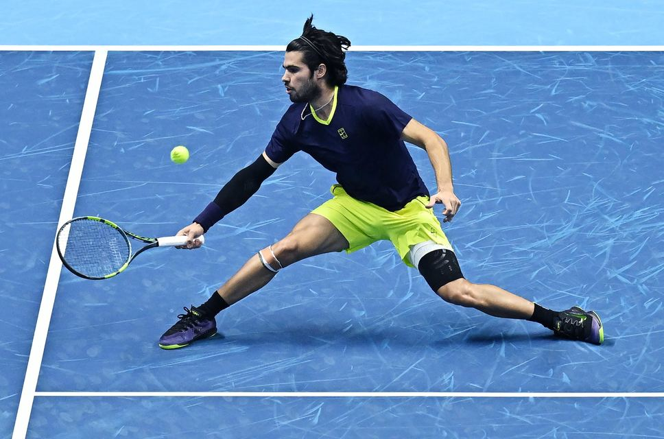

Un poquito de Alcaraz, excesivo para el abatido Cobolli: prueba superada

El murciano, limitado por el muslo, supera al italiano con una propuesta práctica y directa: 6-4 y 6-1, tras 1h 05m. El sábado disputará las semifinales contra Shelton
Son buenos amigos, charlan en la red. Se retira Flavio Cobolli juntando las manos, pidiendo casi perdón: lo siento, viene a decir a su gente, que lo entiende y le aplaude. Le duele. Llegó al torneo, pero mentalmente no estaba. Físicamente, tampoco, o en todo caso entre algodones, ya vacío. Así que se cierra el episodio de la forma ideal para Carlos Alcaraz, pendiente de esa pierna tocada que le ha puesto un brete desde el miércoles, cuando se quejó durante el pulso con el ruso Daniil Medvedev . A partir de ahí, pruebas médicas y suspense. También esta victoria con freno de mano (6-4 y 6-1, en 1h 05m) que precede a su desembarco en las semifinales del sábado (14.30, Movistar+). Al otro lado,…